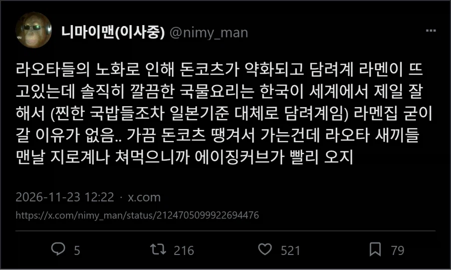
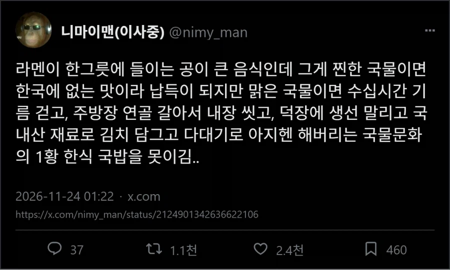
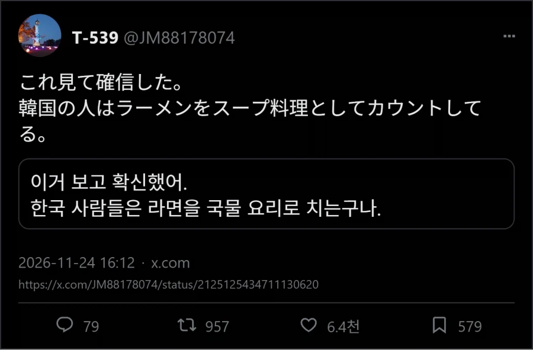
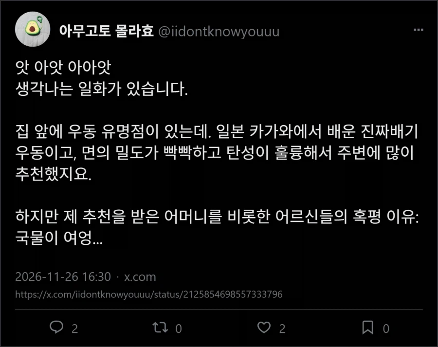
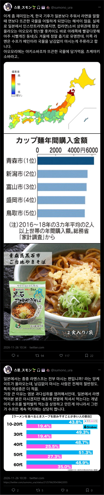
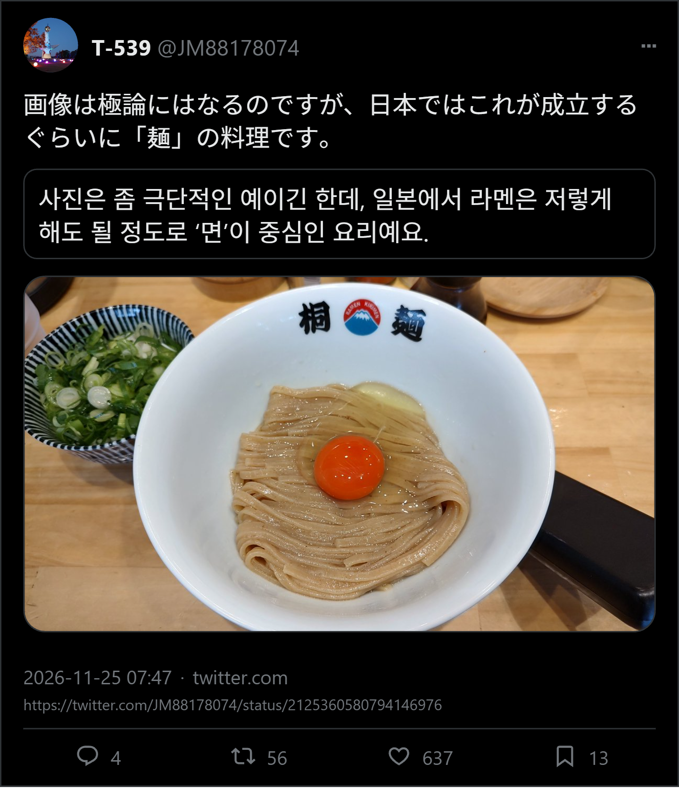

한국은 마라탕마저 국물 못 먹으면 맛없는 음식임 샤브샤브도 남은 국물 죽 끓여먹고 어쨋든 국물은 싹싹김치 해야함
정작 중국에서는 "마라탕 국물까지 먹을 놈"이던가, "마라탕 국물에 밥 말아먹을 놈"인가 하는 말이 욕이라며. 그동네도 마라국물은 안 마셔서....
한국 마라탕은 애초에 국물 먹으라고 사골육수 베이스로 개조된 음식이잖아
ㅇㅇ 마라탕 사골육수 개꿀맛
그래서 고기짬뽕 애매하다 싶으면 마라탕 먹음
한국에서 스아게 갔는데
뜨듯하기만 해서 아쉬웠는데
생긴건 뜨끈할 느낌이었는데
아 그래서 우리 나라 사람이 일본라멘 먹으면 짜다고 하는구나... 우리나라는 추워 국물 위주일 수 밖에 없닻겨울엔 특히
그렇네 나도 당연히 국물요리 아닌가 생각함
원종이들이 밀다가 반박당하고 사라진 주장 아니였나
밥도 말아먹는 음식인데 국물이 메인이 아니었나... 그렇구만
비빔국수는 라면이다
일본서도 말아먹는 경우 많음
국물이 있는데 왜 국물요리가 아님
쟤네는 다른 일식요리도 밥이 메인임. 라멘, 우동도 그렇고 원래 국물, 소스, 반찬, 요리는 밥/면 발사대였음.
발사대라는 말이 너무 찰떡이라 존나웃기네ㅋㅋㅋ
자루소바 생각하면 국물은 소스일뿐
차라리 츠케멘처럼 나오면 마시지는 않을텐데말이지.... 면 말아나오면 먹으라고 주는거지...
국물이야기

일본이 뭘 알아!
국물에 내용물이 담궈져있음=국물요리
내용물이 국물에 뭍혀져있음=소스요리
비빔면을 만들던가
직접 제면하는 존맛 우동집 인스타식으로 운영하다가 사라져서 슬프다ㅠ
한국인들은 국물까지 마셔야 완식으로 치니까
마라탕 국물도 다 마시는 게 한국인이지
중국인: 마라탕 국물도 다 마실 녀석!(심한 욕)
한국인:???
국물만드는데 정성이 더들어가는데 면요리라 하면...
핫쵸보리에 있는 즉석 제면 라멘집 맛있다 해서 찾아가면
한국사람들 대부분 실망 하는 게 "뭐야 시발 이거 멸치 칼국수잖아" 였음
ㅋㅋㅋㅋㅋㅋㅋㅋㅋㅋㅋㅋㅋㅋㅋㅋㅋㅋㅋㅋㅋㅋㅋㅋㅋㅋㅋㅋㅋㅋㅋㅋㅋㅋㅋㅋㅋ
칼국수의 저점이 만만치가 않은 것인겐가.ㅋㅋㅋ
거기에 김치도 안줘버리면 평가가 더 박해지겠네ㅋㅋ
씨리얼 같은건가?
근데 씨리얼도 나중에 남은 녹진한 우유 엑기스가 진빼이인데
중독적인 단맛....
우동이라 하면 그러려니 하겠는데 라멘 면은 솔까 별로..
나도 라멘 면에선 매력을 못느낌 차라리 우동이 낫지
면요리라면서 라멘 면에 얼마나정성쏟는다고 ㅋㅋ 우동은 이해라도하지
라멘 국물요리 맞지않음?
몇시간씩 뼈 고으고 뭐 육수배합하고 그런거아니였나
이런쪽으로는 생각도 못 해봤는데 듣고보니 그렇네
얼마전 일본 갔다가 RA-1 그랑프리라는 라면 경연? 행사가 있더라고. 경연 하는 가게들도 나오고 전설의 가게라는데도 나오고 해서 가서 먹어봤는데...진짜 한국사람 입장에서는 읭? 그 자체였음ㅋㅋㅋ 근데 가게 소개에는 국물을 어떻게 냈다 하는 내용만 적혀있지 면을 어떻게 했다는 내용은 전혀 없던데ㅋㅋ
저쪽 라오타들도 라멘먹을 때 국물부터 안 먹으면 개야랄하지않나